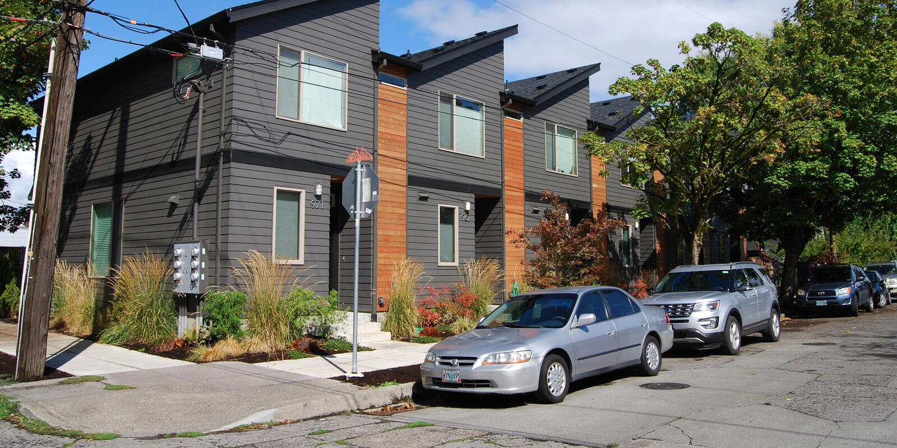

What Asheville Can Learn from Portland on “Missing Middle” Housing
February 18, 2026
This member commentary post does not necessarily reflect the views of Asheville For All or its members.
Asheville is stuck in an ongoing conversation regarding “missing middle housing reforms.” More than two years ago, the city’s “Missing Middle Housing Study and Displacement Risk Assessment” was completed, which included recommendations that would see the city’s housing supply expanded and diversified. The goal: to ease housing costs and increase options for renters and owners, while also welcoming more working people and their families into the neighborhoods where we need the homes the most—those closest to the city’s jobs, opportunities, and transit.
Inaction appears to be rooted in a fear that applying pro-housing reforms to our zoning code will make the problem worse, not better. We’ve written a bunch on this subject already. We’ve noted that no other city that has implemented broad, common-sense “missing middle” residential reforms has experienced troublesome speculation or displacement.
And the confusion at times appears to be a question of what exactly “displacement” means. We borrow from Asheville’s own Affordable Housing Plan to understand that displacement has a myriad of causes, but most generally it is exacerbated when high demand for housing is not met with policies that promote more housing infill and a greater diversity of housing typologies in our high-opportunity neighborhoods.
We also believe that the evidence is exceedingly clear that the best way to promote more housing options, greater affordability, and greater equity in housing is to apply pro-housing zoning reforms and incentives across a broad geographical area.1
The Portland Example
All of the above is rooted in various studies and reports put out by housing policy researchers. But that can all seem a bit abstract., so let’s drill down on one single example.
Portland, Oregon enacted a “missing middle” zoning reform that covered the vast majority of its low-density residential areas a few years ago. Oddly, they called it the Residential Infill Project, or “RIP.” It was ambitious and broad, allowing quadplexes, cottage courts, and even multiple ADUs per lot. And it also eliminated off-street parking requirements. To further incentivize multifamily housing, it also scaled the “Floor to Area Ratio” of a building based on the number of homes it had, effectively limiting the size of a detached single-family-home in the affected residential districts.
The case of Portland has a benefit that the city has done a good job of collecting data and reporting out its results. And I think it’s a promising and instructive case.

Just as in Asheville, people were initially concerned that a city-wide zoning reform to promote middle type housing would negatively affect certain high-risk neighborhoods, even though advance studies suggested that overall displacement would significantly decrease. As Strong Towns reported, “one of the early fears about RIP was that it would trigger a wave of demolitions, accelerating displacement in historically marginalized neighborhoods.”
This article presents a deep dive into some of the concerns around displacement in Portland, and some of the solutions that were proposed. Notably, the group that had claimed the “anti-displacement” mantle in Portland intentionally avoided making the argument that legalizing quadplexes would accelerate displacement, calling the idea “far-fetched.” “[M]aybe there’s some small number of renters who could be displaced a little earlier than they would have been displaced anyway by the next rent increase. Rejecting the zoning change would do nothing to prevent their eventual displacement,” they said. The group did however advocate for more carrots, rather than sticks, to get more below-market-rate housing built in those same residential districts that were being upzoned.
They understood housing policy to be additive, in other words, rather than zero-sum, which is how it often seems to be dealt with in Asheville.

In the end, Portland has found that displacement fears were misplaced. The city produced a report last year in order to track how the Residential Infill Project is going. The results are sterling. That wave of demolitions never materialized.
To be clear, all residential neighborhoods experience “tear-downs.” Old houses outlive their usefulness. And new opportunities for new uses present themselves.
The question when it comes to zoning reform and housing supply is this: is the new building that goes up going to be a single family home? Or is it going to be a duplex or quadplex? In a high-demand neighborhood, when tear-downs happen but apartments are off the table for builders, you usually end up seeing larger single family homes. This is the symptom of a system where housing policy isn’t in line with the needs of working people, and the result is demographic change—that neighborhood is likely to see rising median incomes (and likely a rising median resident age, as young people are priced out).2
What happened in Portland is that demolitions continued apace as compared to before the adoption of the RIP program. They didn’t go up, nor did they go down. But whereas before, those demolitions would have ended up with the same old exclusionary single-family housing, they were now being replaced with multifamily homes. The study notes that in Portland, single family homes now comprise less than 20% of the new builds in the area affected by RIP’s reforms, which covers the majority of residential zoned land.
The study notes:
Before RIP’s adoption, for every demolition in [the affected zones] that resulted in new construction, about two homes were built on average. After RIP’s adoption, that figure rose to roughly four homes per demolition. This realizes a goal of RIP reforms: when a demolition occurs, the community receives the benefit of greater housing production in return.
Furthermore, results show that “[m]ost of the homebuilding is in popular and generally expensive inner east Portland neighborhoods.” This is a good thing.
Perhaps it’s counter-intuitive. I had a conversation recently with someone about this idea—that in order for housing to become more equitable, abundant, and affordable in a city, we want relatively wealthy neighborhoods to see housing growth. He was flummoxed. Wouldn’t those new apartments, by nature of their location, be more expensive than most people could afford?
But it works for a few reasons. First, all things being equal, builders want to build where land is desirable. It ensures the place is gonna sell or rent. So if you allow more construction in desirable places, you promote more housing growth more quickly overall. Second, if as we said above, that a broad enough area of the city is “up zoned,” that means that land values aren’t going to spike elsewhere. This means less disruption to those neighborhoods that can be more at risk. (This is what I call “gentrification in reverse.” If middle class people can buy or rent in wealthier neighborhoods, they are likely to do so.) And third, we know that an increased housing supply in wealthier neighborhoods leads to what researchers call “moving chains,” which are regional in scope. All neighborhoods ultimately benefit with more vacancies, more options, and lower housing costs, even as there are fewer relative demolitions in those high-vulnerability neighborhoods relative to what would happen if you didn’t allow more housing in those high-opportunity places.
Finally, the Portland study reports that costs for housing—even new housing!—have dramatically decreased. The study focuses on sale prices, and doesn’t discuss rents, for what it’s worth. But as far as sale prices go, the results are dramatic. New homes, such as duplexes and townhomes, are selling on average $250,000 to $300,000 less than single family homes.
The takeaway from this case study, then, is simply that Asheville’s own Missing Middle plan is right on track! Asheville should a) pass Missing Middle zoning reforms, such as eliminating parking minimums and allowing quadplexes in all residential zones; and b) ensure that such reforms are applied as widely across the city as possible, especially including high-opportunity neighborhoods like North and West Asheville.
And whether it comes parallel to zoning reforms or following them, Asheville should continue to develop subsidies and other programs informed by the city’s 2024 Affordable Housing Plan, such as the restoration of the Land Use Incentive Grant (LUIG), the creation of a central subsidized housing registry, and stipulating that all city-supported developments should accept rental assistance. One good thing is good. Two good things are better. Housing policy works best when it is additive!
The tendency when people talk about housing policy in Asheville, whether willful or not, is to create more heat than light. In such cases, all we can do is simply reaffirm as best we can what we’ve been saying,what the city’s 2023 Missing Middle Housing Study and Displacement Risk Assessment says, and what the city’s 2024 Affordable Housing Plan says:
Missing middle reform, applied broadly across the city, is an anti-displacement strategy.
This member commentary post does not necessarily reflect the views of Asheville For All or its members.